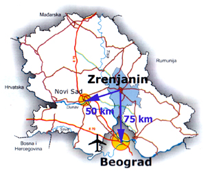
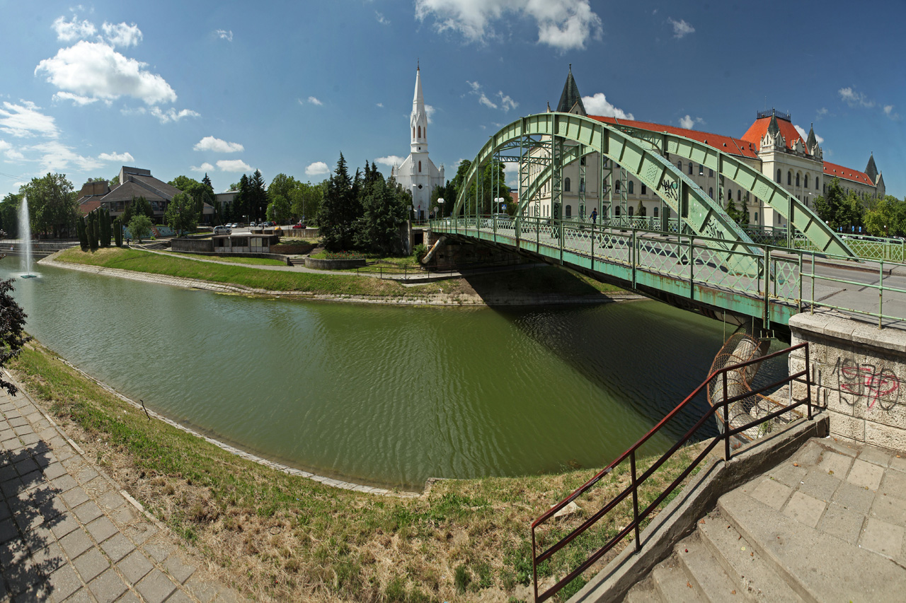

Zrenjanin se nalazi na zapadnoj ivici banatskog lesnog platoa, na mestu gde se kanalisana reka Begej uliva u nekadašnje korito reke Tise. Područje opštine je izrazito ravničarski kraj. Grad Zrenjanin leži na 20°23’ istočne geografske dužine i 45°23’ severne geografske širine, u središtu srpskog dela regije Banat, na obalama reka Begej i Tisa. Nadmorska visina Zrenjanina je 80 metara, a na teritoriji grada kreće se u rasponu od 77 – 97 metara.

Zrenjanin je od glavnog grada Srbije, Beograda, udaljen 75 kilometara, a od glavnog grada Autonomne pokrajine Vojvodine, Novog Sada, 50 kilometara, koliko su udaljene i sadašnje granice Evropske unije (Rumunija). Ovakav položaj čini Zrenjanin izuzetno važnim tranzicionim centrom i potencijalnim resursom na pravcu sever – jug i istok – zapad.
Begej je reka koja protiče kroz Zrenjanin i predstavlja važan deo njegovog geografskog i urbanog prostora. Reka je značajna za izgled i razvoj grada.
